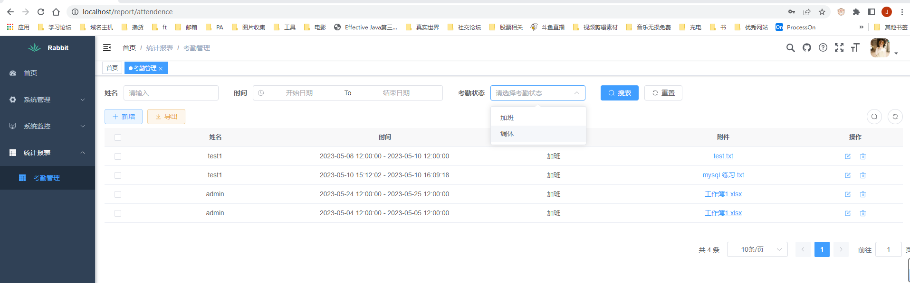

二次开发工作台
二次开发考勤模块
基于https://doc.iocoder.cn/ ruoyi 开发一个考勤模块，记录加班时长以及证据附件，调休记录
功能：考勤记录，记录加班 、休假的统计
安装
redis
mysql
开发
新增模块，主项目里面pom文件增加配置
依葫芦画瓢编写controller service 和mapper
- 前端页面开发

- 权限、导出等直接使用ruoyi提供的注解开发
总结
接口请求处理到响应的开发结构
- Domain ==> VO
- Controller
- Services
- Mapper
总体就是Controller 调用 Service service 调用Mapper。其中Service 和 Mapper先定义接口，在定义具体的实现， 通过Autowired进行类型匹配，匹配接口方便更换具体的实现
Control ==> 类 处理前端请求 的映射 , 前端url 到后端服务逻辑的组合的映射
继承一个BaseController，里面有一些常用响应处理的方法
返回的包装
Mapper ==> 有个EntityMapper的接口 (定义数据库ORM对象的查询) 对应有个xxMap.xml的文件 ，里面通过namespace=”com.ruoyi.report.mapper.AttendMapper” 相对于生成了一个mapper Bean对象
Service == 接口 和 带impl的 接口的实现 ,接口定义方法 ，imp定义Service接口的实现，里面调用Mapper文件里面定义的方法
开发过程中问题思考
类似要和user表关联查询情况下，是业务表里面保存username 还是说通过userId外键关联 。前者join后效率偏低 ， 还是在service里面处理在根据ID查name
sql和java数据类型对应关系
https://blog.csdn.net/weixin_44188105/article/details/129745013
文件上传问题，方案有2种对象存储和本地的， 没有服务器，存本地，路径是配置的地址，如果是真实生产环境，地址切换问题，linux和window的磁盘路径访问问题